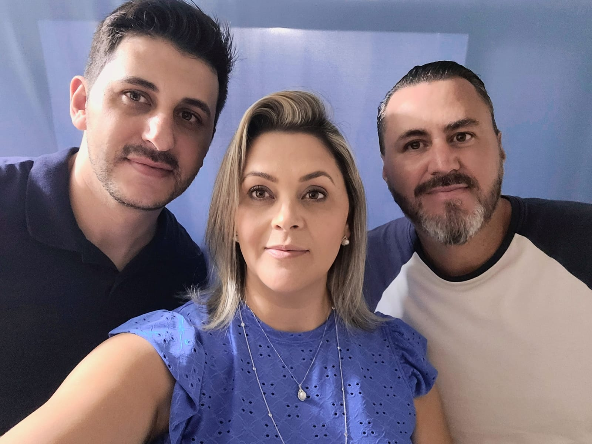
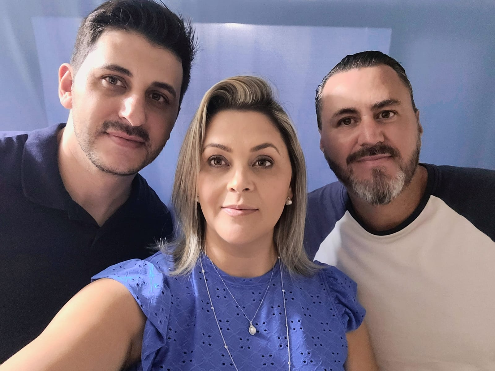

Histórico paterno
Minha família por parte de pai, em sua grande maioria, tem origem espanhola. Os avós paternos do meu pai, Antônio Garcia Romero e Antônia Garcia, nasceram e cresceram na Espanha, mas quando tinham 13 e 11 anos, precisaram fugir da Espanha por causa da ditadura Franco, e se conheceram no navio vindo para cá. Eles se instalaram em Londrina na década de 1920 e estão aqui desde então, mas algumas pessoas se mudaram para São Paulo, Curitiba e Itália. Os avós maternos do meu pai são italianos, mas não sei sua história. Eles são de Maringá, mas minha avó, Iraci, se mudou para a zona rural de Londrina aos 15 anos, para trabalhar na escola que meu bisavô Antônio havia construído, então ela conheceu meu avô e eles se instalaram na região urbana de Londrina em 1970, quando meu pai, o mais novo de 5 filhos, nasceu.
Histórico materno
A família da minha mãe tem um pouco mais de diversidade, os avós paternos eram ambos italianos, mas os seus avós maternos tinham raízes diferentes, meu bisavô era português, sua família se mudou para o Brasil na metade do século XIX, e a minha bisavó, era descendente de indígenas, os tataravós da minha avó Elzi foram escravos e mau tratados. Todos eles são de Minas Gerais, da mesma região, mas após o casamento meus avós se mudaram para Rolândia, em 1975, e em 1992, quando minha mãe tinha 11 anos de idade, eles se mudaram para Londrina.
Tradição de Trabalho
A família do meu pai tem muita participação no meio militar, meu pai é bombeiro militar aposentado, se aposentou em junho de 2023 após 35 anos de serviço como bombeiro. Em dezembro de 2022 e janeiro de 2023, ele ganhou muitas medalhas e parabenizações por ser o salva vidas mais antigo do Paraná, trabalhando nas temporadas de verão desde 1990. O meu tio Edson, irmão mais velho do meu pai, é policial militar também aposentado, ele trabalhou no departamento de polícia forense por muitos anos, era um perito criminal especializado em roubos de carros, e seus dois filhos, meus primos Lucas e Mateus, são ambos policiais, Lucas trabalha no choque e Mateus na rotan. Além disso, minha avó paterna, Iraci, era professora, professora do ensino fundamental.
A família da minha mãe é muito variada em trabalhos, mas um trabalho compartilhado é entre meu tio e meu avô. Meu avô foi caminhoneiro por boa parte de sua vida, e meu tio Anderson vende caminhões da Scania. Minha avó nunca teve um emprego fixo, trabalhou com muitas coisas ao longo de sua vida, como babá, faxineira, cozinheira e etc, mas a profissão que mais gostou foi assistente na farmácia de seu cunhado, ela deseja ter um diploma em farmácia mas até hoje isso não foi possível. Minha mãe não tem uma profissão, ela é dona de casa, mas trabalhou como vendedora de sapatos quando era jovem.
Integrantes
Ambas as famílias são muito extensas, isso sem contar os parentes distantes. Meus avós paternos, Antônio e Iraci, tiveram 5 filhos, Edson, Edvaldo, Élvio, Eronildes e Eleovan (meu pai, o caçula). tenho ao todo 6 primos por parte de pai, Lucas, Caio, Mateus, Bárbara, Anna e Lorrayne, todos eles são muito mais velhos e já são casados com filhos. Caio tem uma filha, Julia, e dois gemêos, Vicente e Gabriel. Bárbara tem um filho, Pedro, e Lucas tem dois filhos, Vitor e Heitor.
Minha família por parte de mãe é menor, meus avós, Wdalce e Elzi tiveram 3 filhos, Anderson, Sandra e Wellington, minha mãe é a irmã do meio. Tenho no total 3 primos, Guilherme, Daniel e Theo. Outra pessoa que convive bastante conosco é a minha tia avó Joelma, irmã da minha avó. Já a minha família central é relativamente pequena, apenas meus pais, eu e meu irmão mais velho, Kauê.
Árvore Genealógica

Fotos


 

.jpg)
Curiosidades
Eu sou a prima mais nova por parte de pai e a única prima mulher por parte de mãe
Meus avós maternos eram donos de um carrinho de caldo de cana, ficava na frente do hospital Santa Casa, mas fecharam quando veio a pandemia
Antes de ser bombeiro, meu pai trabalhava montando elevadores, e boa parte dos elevadores dos prédios antigos de Londrina e região foram montados por ele
Além de ser bombeiro, meu pai é formado em pedagogia e tem 3 pós graduações
Meu irmão mais velho estuda física na UEL, está no segundo semestre